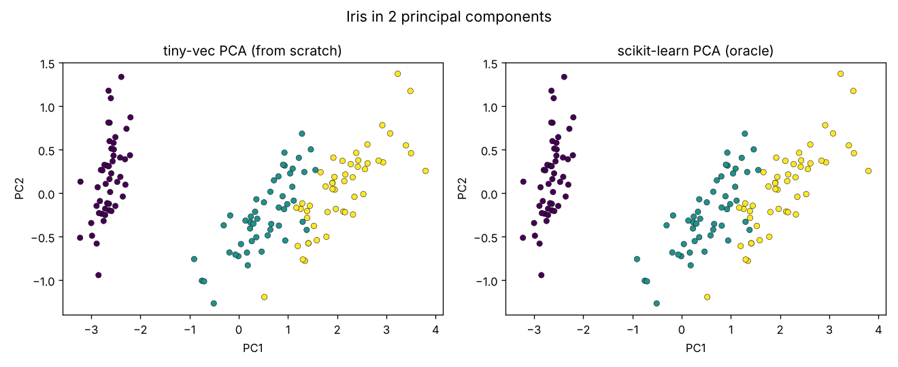

Linear algebra and reverse-mode autograd from first principles. Pure Python, no runtime dependencies; NumPy only in tests.
| n | naive (s) | strassen (s) | winner |
|---|---|---|---|
| 128 | 0.1211 | 0.1369 | naive |
| 256 | 0.9501 | 1.0464 | naive |
| 512 | 10.7407 | 7.2658 | strassen |
Strassen only wins at n=512 here. NumPy was ~229x faster than the naive version at n=128.

pip install -e ".[dev]"
pytest --cov=tiny_vec